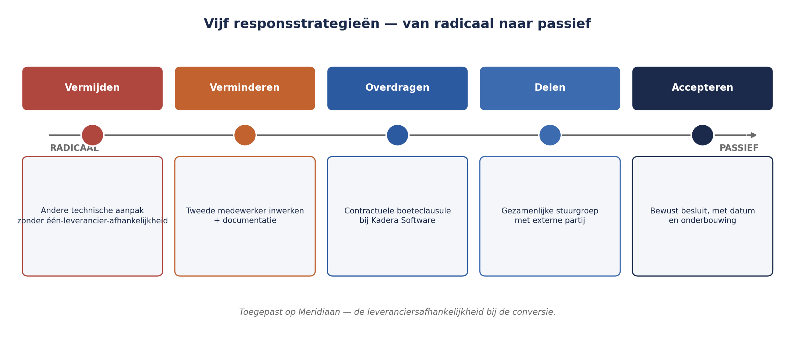
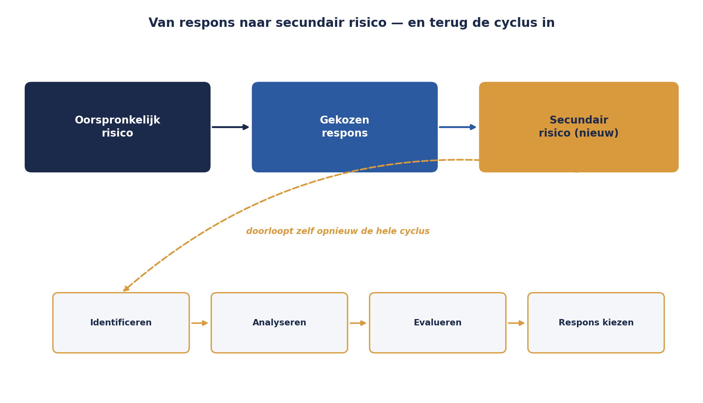

Deel 6 — Evaluatie en respons: wat doe je ermee?
Niveau 1 — Fundament · Reader
6.0 Twee risico’s, twee vraagstukken
Aan het eind van deel 5 bleven er twee risico’s over die om extra aandacht vroegen, niet vanwege hun score maar vanwege hun positie in de matrix:
- Sleutelkennis bij Gerard Ploeg — kans 3, impact 4. Een middelmatige kans, maar als hij zich voordoet, blokkeert de analysefase volledig.
- Wetgevingsinstabiliteit — kans 2, impact 5. Zeldzaam, maar met een gevolg dat de hele opleverdatum in gevaar brengt.
Sanne staat nu voor de vraag die het hele register tot nu toe heeft vermeden: wat ga je hier daadwerkelijk doen? Scoren was hoofdstuk één. Dit deel is hoofdstuk twee, en het is het hoofdstuk waar risicomanagement ophoudt een administratieve exercitie te zijn en een besluitvormingsinstrument wordt — precies de belofte uit Kernzin 1.
6.1 Vijf strategieën voor bedreigingen
Voor een risico dat een bedreiging is (negatief effect), zijn er vijf principieel verschillende reacties mogelijk. Ze zijn niet uitwisselbaar en ze zijn niet allemaal even vaak toepasbaar — maar ze zijn wel de volledige lijst, en een risico dat geen van de vijf expliciet heeft gekregen, heeft simpelweg nog geen respons.
Vermijden. De activiteit die het risico veroorzaakt, wordt niet uitgevoerd, of zo veranderd dat het risico niet meer kan optreden. Radicaal en niet altijd mogelijk: je kunt de conversie van deelnemersgegevens niet vermijden zonder het project zelf te vermijden. Waar het wél kan — bijvoorbeeld door een andere technische aanpak te kiezen die de afhankelijkheid van één leverancier wegneemt — is het de krachtigste respons, omdat hij het risico niet beheerst maar laat verdwijnen.
Verminderen. De kans, de impact, of allebei worden verkleind, zonder het risico weg te nemen. Dit is de meest gebruikte respons, en ook de respons waar het onderscheid tussen kans-verminderen en impact-verminderen ertoe doet: een tweede opgeleide medewerker naast Gerard Ploeg vermindert de kans dat kennisverlies tot stilstand leidt; een goed gedocumenteerde overdrachtsprocedure vermindert vooral de impact als het toch gebeurt. Beide zijn verminderen, met een ander aangrijpingspunt — precies de twee aangrijpingspunten die de risicozin uit deel 1 al zichtbaar maakte (oorzaak versus gevolg).
Overdragen. Het risico, of het financiële gevolg ervan, wordt bij een derde partij belegd — een verzekering, een contractuele boeteclausule bij de leverancier, uitbesteding met garanties. Let op: overdragen verplaatst het risico, het elimineert het niet. Het conversierisico bij Kadera Software zou je gedeeltelijk kunnen overdragen door een contractuele boete bij te late levering af te spreken — maar de opleverdatum van het project zelf blijft in gevaar, ongeacht wie de rekening betaalt.
Delen. Een tussenvorm tussen verminderen en overdragen: de organisatie en een andere partij dragen samen het risico én de respons, bijvoorbeeld in een gezamenlijk project met een leverancier waarbij beide partijen belang hebben bij het welslagen. Delen wordt in de vakliteratuur soms binnen “overdragen” geschaard; deze cursus houdt ze apart omdat de praktische aanpak (gezamenlijke sturing versus eenzijdige uitbesteding) wezenlijk verschilt.
Accepteren. Bewust besluiten het risico te dragen zoals het is, zonder verdere actie — meestal omdat de kosten van een andere respons niet opwegen tegen de resterende blootstelling, of omdat het risico al binnen de vastgestelde risicobereidheid valt (zie deel 3). Accepteren is een volwaardige, actieve keuze, geen afwezigheid van een keuze — en dat onderscheid is belangrijker dan het lijkt.
Kernzin 4 van de cursus: accepteren is een besluit, geen verzuim — maar alleen als het bewust en gedocumenteerd is genomen. Een risico dat níet is behandeld omdat niemand eraan toekwam, is niet geaccepteerd, het is genegeerd.
Regel 11 van het oude WGP 2.0-register (zie deel 1) is hiervan het schoolvoorbeeld. Het stond veertien maanden op score 25 zonder enige respons. Was dat een bewust acceptatiebesluit? Nee — niemand heeft het ooit als zodanig vastgesteld. Het verschil tussen “geaccepteerd” en “genegeerd” zit niet in wat er wel of niet gebeurt, maar in of er een aantoonbaar besluit aan ten grondslag ligt.

6.2 Vier strategieën voor kansen
Kansen (positief risico, zie deel 1) hebben een spiegelbeeldige set responsstrategieën, met een net iets andere logica: bij een bedreiging probeer je de blootstelling te verkleinen, bij een kans probeer je de blootstelling juist te vergroten.
Exploiteren. Actief zorgen dat de kans zich zeker voordoet — het spiegelbeeld van vermijden. Bijvoorbeeld: als er een kans is dat een nieuwe API-standaard de koppelbouw versnelt, kun je ervoor kiezen die standaard nu al te gaan gebruiken in plaats van af te wachten of hij zich toevallig voordoet.
Vergroten. De kans of het gunstige effect vergroten, zonder volledige zekerheid te forceren — het spiegelbeeld van verminderen. Bijvoorbeeld: vroeg contact leggen met de toezichthouder over een nieuwe, gunstiger interpretatie van een regel, om de kans te vergroten dat die interpretatie ook daadwerkelijk van toepassing wordt verklaard op Meridiaan.
Delen. Net als bij bedreigingen: samen met een andere partij zowel de kans als de bijbehorende inspanning dragen, bijvoorbeeld door gezamenlijk met een sectorgenoot te lobbyen voor een gunstiger toezichtkader.
Negeren (of: accepteren). Bewust besluiten geen actie te ondernemen, meestal omdat de kans klein is of de moeite van actief najagen niet waard.
In de praktijk van deze cursus — en van de meeste organisaties — krijgen kansen aanzienlijk minder aandacht dan bedreigingen. Dat is, zoals in deel 1 al gezegd, geen fout die deze cursus meent op te lossen, maar wel een blinde vlek om je bewust van te zijn: een organisatie die alleen bedreigingen managet, laat structureel kansen liggen om méér waarde te creëren dan de bestaande doelstellingen voorschrijven.
6.3 Secundair risico: de respons die zelf risico’s introduceert
Elke respons — vooral verminderen, overdragen en delen — kan een nieuw risico veroorzaken. Dat heet secundair risico, en het wordt vaak vergeten omdat de aandacht na het kiezen van een respons verschuift naar uitvoering, niet naar controle.
Neem de respons voor sleutelkennis: een tweede medewerker opleiden naast Gerard Ploeg. Voor de hand liggend, en verstandig. Maar het introduceert een secundair risico: gedurende de opleidingsperiode is de capaciteit van Gerard zelf tijdelijk lager (hij besteedt tijd aan het overdragen van kennis in plaats van aan de analyse), wat op korte termijn juist een nieuw planningsrisico geeft.
Of neem overdragen via een contractuele boeteclausule bij Kadera Software: het secundaire risico is dat de leverancier, om de boete te vermijden, onder tijdsdruk kwaliteit inlevert bij de oplevering — het risico is niet weg, het is van vorm veranderd.
Elke respons die je kiest, verdient de vraag: welk nieuw risico maak ik hiermee aan? Dat nieuwe risico doorloopt vervolgens hetzelfde proces — het wordt geïdentificeerd, geanalyseerd, en krijgt zelf een respons. Dit is precies waarom de cyclus uit deel 3 een cyclus is en geen rechte lijn: risicobehandeling voedt terug naar identificatie.

6.4 Welke respons past bij welk risico?
Er is geen formule die de keuze voor je maakt, maar er zijn twee vaste vragen die de keuze wél structureren:
Past de kosten van de respons bij de omvang van het risico? Een dure, structurele maatregel voor een klein, incidenteel risico is zelf een vorm van verspilling. Dit is waar de kwalitatieve analyse uit deel 5 haar nut bewijst: brede banden (laag/midden/hoog) geven al genoeg richting om deze vraag te beantwoorden, zonder de schijnprecisie van een exact getal.
Valt het residuele risico, na de gekozen respons, binnen de vastgestelde risicobereidheid? Dit is waar het context- en criteriadocument uit deel 3 concreet wordt: de grove uitspraak over risicobereidheid die daar is vastgelegd, is de toets waarmee je beoordeelt of een gekozen respons “genoeg” is.
Toegepast op de twee risico’s uit 6.0:
Sleutelkennis (kans 3, impact 4). Respons: verminderen, in twee delen — documentatie van de premieberekening opstellen (vermindert de impact: bij uitval is er een uitwijkmogelijkheid) én een tweede medewerker gedeeltelijk inwerken (vermindert de kans dat volledige stilstand optreedt). Secundair risico: tijdelijk lagere capaciteit van Gerard tijdens de overdracht — geaccepteerd, want klein en tijdelijk, binnen de risicobereidheid.
Wetgevingsinstabiliteit (kans 2, impact 5). Respons: een combinatie. Verminderen van de impact door de koppeling met een abstractielaag te bouwen die minder gevoelig is voor specificatiewijzigingen (duurder, maar rechtvaardigt zich gezien de impact-5). Het restrisico — een wetswijziging die zo groot is dat zelfs een abstractielaag niet volstaat — wordt geaccepteerd, met een expliciete trigger: als het wetsvoorstel een bepaalde parlementaire fase bereikt, wordt het risico opnieuw beoordeeld (een vooruitwijzing naar de toleranties en triggers van deel 8).
Beide voorbeelden combineren strategieën. Dat is normaal en vaak beter dan één enkele strategie kiezen — zolang elk onderdeel van de combinatie expliciet is benoemd, met een eigen eigenaar en een eigen actie, in plaats van vaag te blijven onder één koepelterm als “we gaan dit beheersen”.
6.5 Van respons naar registerregel
De respons die je kiest, moet zichtbaar worden in het register, niet alleen worden besproken en vergeten. Voor elk van de negentien risico’s van Sanne wordt nu vastgelegd: de gekozen strategie (of combinatie), de concrete actie(s), wie de actie uitvoert, het residuele risico na uitvoering, en eventuele secundaire risico’s die apart worden opgenomen als nieuwe regel.
Dit is de brug naar deel 7, waar het register zelf — de structuur, de eigenaarschap, het onderhoud — centraal staat. Voor nu is het belangrijkste inzicht dat een respons zonder deze vastlegging dezelfde weg gaat als regel 11 van het oude register: een goed voornemen dat nergens landt, en na verloop van tijd door niemand meer wordt herinnerd.
Samenvatting van deel 6
- Vijf strategieën voor bedreigingen: vermijden, verminderen, overdragen, delen, accepteren. Vier voor kansen: exploiteren, vergroten, delen, negeren.
- Kernzin 4: accepteren is een besluit, geen verzuim — maar alleen als het bewust en gedocumenteerd is genomen. Regel 11 van het oude register was genegeerd, niet geaccepteerd.
- Verminderen kan aangrijpen op de kans óf op de impact — vaak allebei nodig, met verschillende maatregelen.
- Elke respons kan een secundair risico veroorzaken; dat nieuwe risico doorloopt zelf weer de hele cyclus.
- Twee vragen structureren de keuze: past de kosten van de respons bij de omvang van het risico, en valt het residuele risico binnen de vastgestelde risicobereidheid?
- Combinaties van strategieën zijn normaal, mits elk onderdeel expliciet is benoemd met een eigen eigenaar en actie.
Vooruitblik
Deel 7 neemt de negentien risico’s — nu elk met een respons — en bouwt ze om tot een werkend register: wie is eigenaar, wie voert de actie uit, en hoe voorkom je dat dit register over een jaar hetzelfde lot ondergaat als het oude.